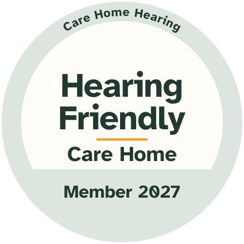
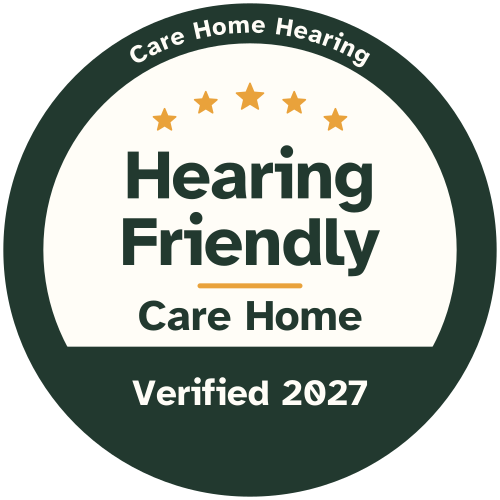

Campaign Member
Free
- A named Hearing Champion in your home
- The free self-assessment and environment audit
- The Hearing Champion Handbook (PDF) and toolkit
- Your home's profile on Care Home Hearing
- The Campaign Member badge
A campaign to make good hearing care part of everyday care. Any care home can join for free. Homes that want to show families how well they look after residents' hearing can be independently verified.

In most care homes there is at least one resident who has quietly stopped joining in. Often the cause is not dementia or low mood. They simply cannot hear. Their hearing aid is in a drawer, the battery is flat or the wax filter is blocked, and nobody on shift has been shown how to check.
of residents in care homes for older people live with hearing loss.
Engage, Care England and Nightingale Hammerson, 2025Fewer than one in four people who could benefit from hearing aids use them.
As cited in the 2025 paperof care home staff said they check or test residents' hearing aids.
Cross et al., 2024People with hearing loss are around three times more likely to fall.
As cited in the 2025 paperName a Hearing Champion, complete the free self-assessment and claim your home's profile.
Use the free Training Academy, or book on-site Hearing Champion training. Training from any provider counts.
An independent assessor checks your home against the published standard. Verified homes display the badge for 12 months.

Free
£995 first year · then £495 a year
Founding homes: the first five homes pay £495 for their first year, in return for sharing what changed. Places close on 31 January 2027.
Become a founding homePrices are for one care home location and include VAT where it applies. Care groups with several homes can ask about group pricing.
Tell us about your home and we'll be in touch about the next steps. You'll get the free Hearing Champion Handbook straight away, or you can download it now.
We use your details only to respond to you about the campaign. We will not add you to a marketing list unless you tick the box. See our privacy notice.
No. Homes can join and be verified whatever their hearing care provider, including the NHS. Buying any Hear4All service does not help a home pass.
No. Training from any provider counts if it covers the published learning outcomes. One on-site session is included with verification if you want it.
The standard is currently being reviewed by a qualified audiologist and our advisory panel. Founding homes can sign up and start now, and verification visits begin as soon as the review is complete.
No. Verification is separate from the Care Quality Commission and is not endorsed by CQC, the NHS or any organisation we refer to.
The campaign puts into practice the recommendations of Hearing Loss in Care Homes: A Call to Action (Engage, with Care England and Nightingale Hammerson, 2025), RNID's guidance for care homes and NICE guideline NG98. These organisations are not connected with the campaign.
Care Home Hearing and the Hearing Friendly Care Homes campaign are operated by Tingli Limited (company 07115010). Care Home Hearing provides both training and verification. Tingli Limited also owns the Hear4All brand, which is licensed to 2Hearing Ltd for clinical hearing care services. Taking part does not require using Care Home Hearing training or Hear4All, and neither affects assessment outcomes.